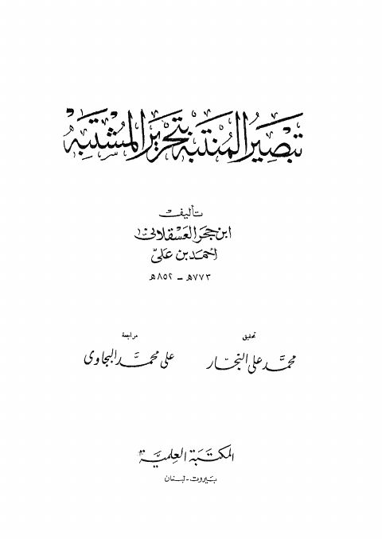

Downloads need an internet connection.
تبصير المنتبه بتحرير المشتبه
Authors: أحمد بن علي بن حجر العسقلاني
Editors: محمد علي النجار علي محمد البيجاوي
Publishers: المكتبة العلمية
**▫️ العنوان: تبصير المنتبه بتحرير المشتبه** ▪️ المؤلف: #أحمد_بن_محمد_بن_علي_بن_حجر_العسقلاني ▫️ المحقق: #محمد_علي_النجار • #علي_محمد_البيجاوي ▪️ الناشر: #المكتبة_العلمية ▫️ بلد النشر: بيروت، #لبنان ▪️ الطبعة: 1 ▫️ عدد الأجزاء: 4 ▪️ الصفحات: 1721 ▫️ نوع الوعاء: #كتاب ▪️ التصنيف الرئيسي: #التراجم_والأعلام ۪